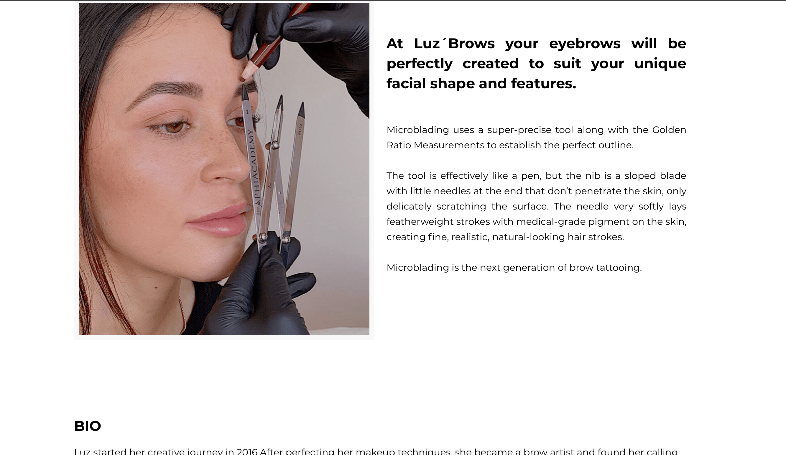
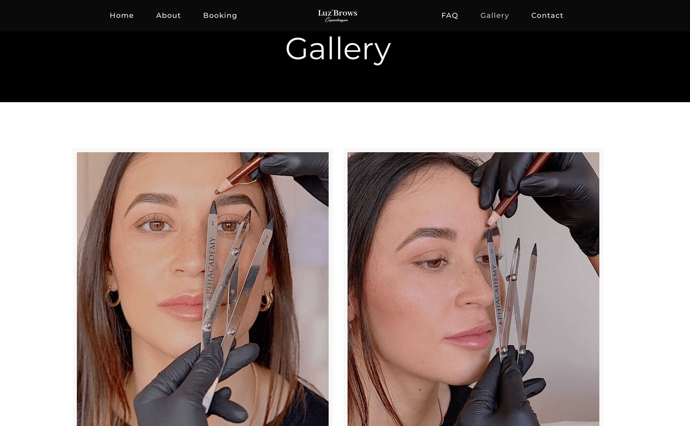
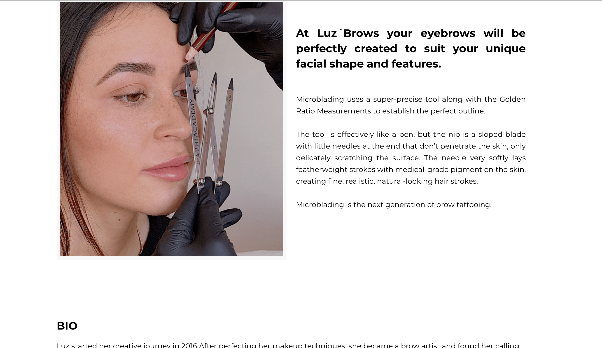
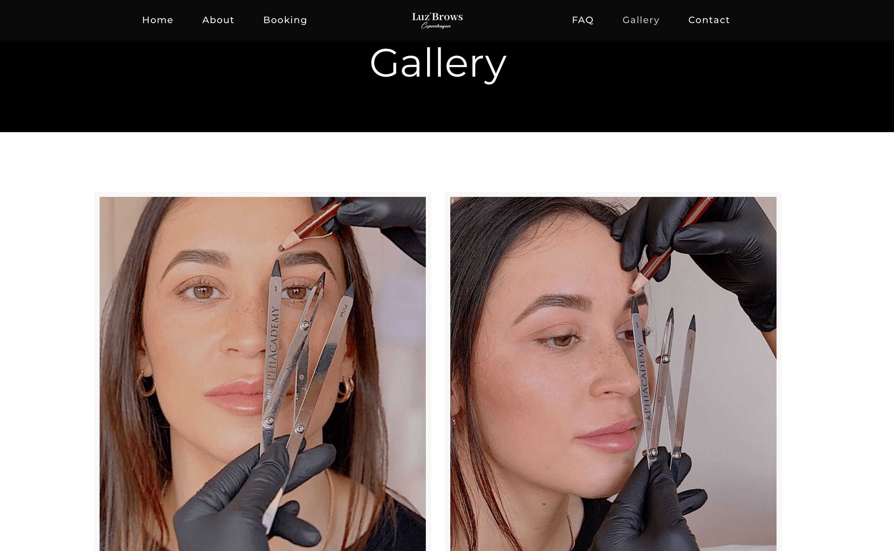
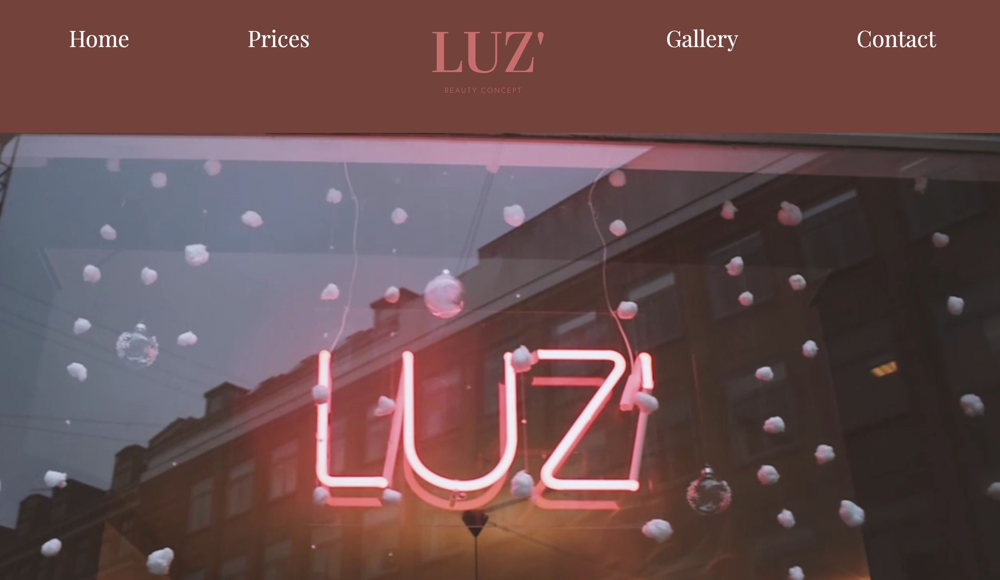
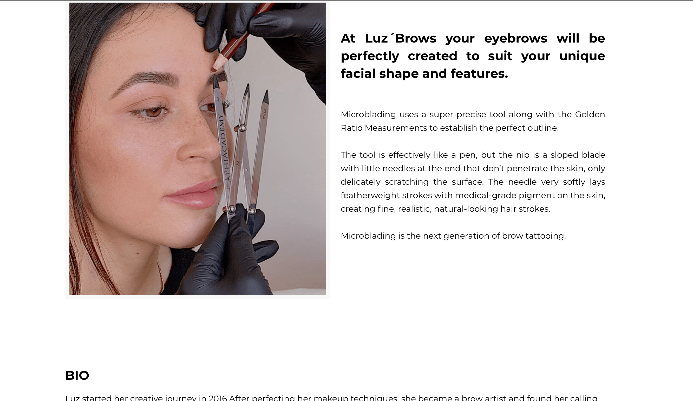
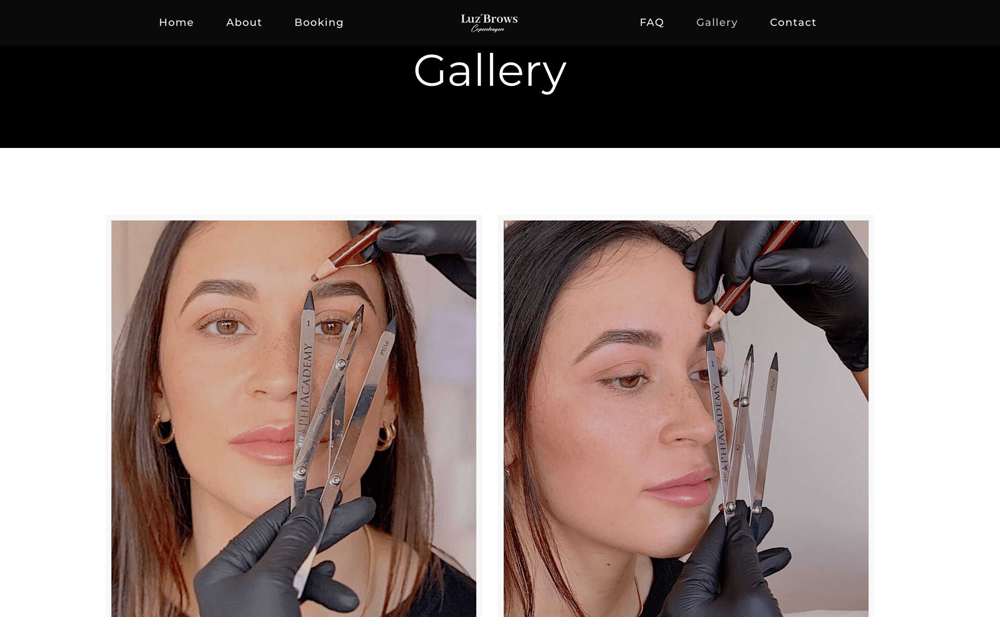

Website før redesign ↓
 



Website efter redesign ↓


I dette forløb, blev vi introduceret for videoproduktion ved benyttelse af Adobe programmer som Premiere Pro og Audition. Der var også stor fokus på grubbearbejde, da vi fik en case-opgave, hvor vi skulle samarbejde med en udvalgt virksomhed og producere en video for dem, tage billeder og redesigne deres website.
Vigtigt for dette tema var også at flere redskaber og værktøjer fra tidligere temaer blev benyttet, f.eks. fra UX-forløbet, hvor vi skulle lave en prototype på vores website og masser af research før redesign for at etablere en målgruppe. Især værktøjer fra grundlæggende web-forløbet blev også genbrugt, da vi skulle bruge alt det, vi havde lært, til at lave websitet for vores valgte virksomhed.
Til pilotprojekt blev vi introduceret for Adobe Premiere Pro, som kan benyttes til at klippe og redigere video-indhold. Vi udvalgte Aske Molin, som er dedikeret Ariana Grande-fan til et interview. Vi fik udøvet 3 akts-modellen som interview-metode og for selve filmningen tog vi udgangspunkt i five shot-sequence.
Vi fik også bekendtskab med de væsentlige analysepunkter for videoproduktion, nemlig dramaturgi, klipning, lyd, b-roll, framings og colorgrading.
tekst om redesign


tekst om temadokumentation